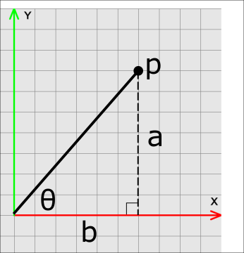
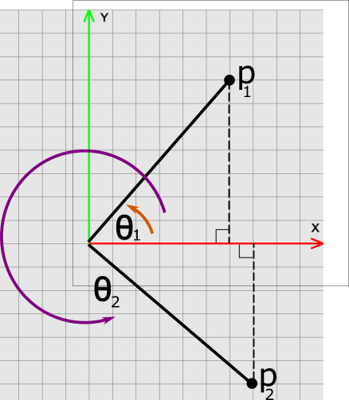
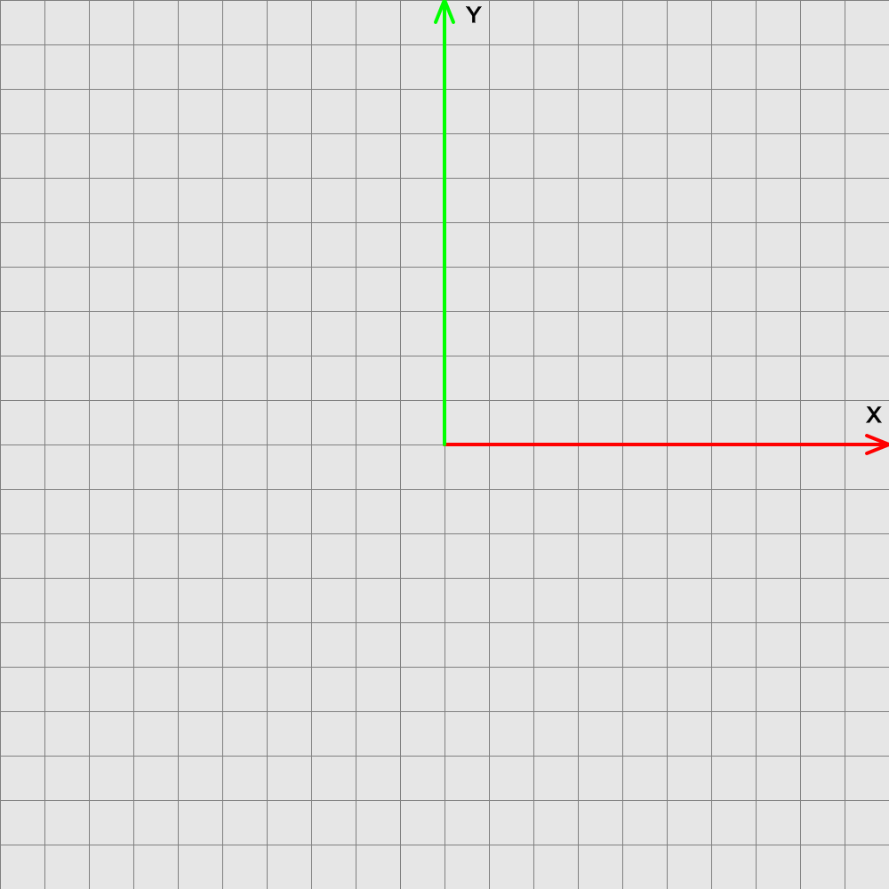

Animation Pre-requisites: Self-assessment
Use the questions below to identify topics for review.
Trigonometry anchor:trig[]
Consider the point p and angle \(\theta\) below, where p is a distance of 1 unit from the origin and \(\theta\) is 45 degrees. What is the coordinate of p? Hint: what are the values of a and b?

Consider the point \(p_1\) and angle \(\theta_1\) below. Suppose \(p_1=(2,2,0)^T\). What is the value of \(\theta_1\)? Hint: Use tangent.

Consider the point \(p_2\) and angle \(\theta_2\) above. Suppose \(p_2=(3,-2,0)^T\). What is the value of \(\theta_2\)? Hint: Use tangent.
Vectors
A vector is an n-tuple of real numbers. In this class, we will work with 2D, 3D, and 4D vectors. Suppose we have a vector u=(-2, 3, 0)T and v=(-1, 4, 0)T.
-
Draw the vectors u and v, with their tails anchored at the origin below.

-
What is the length of u?
-
What is the distance between u and v?
-
Compute and draw u + v.
-
Compute and draw u - v
-
Compute the cross product \(u \times v\).
-
Normalize the vector u, e.g. compute \(\frac{u}{\|u\|}\).
-
Compute the dot product \(u \cdot v\).
Matrices
Consider the following matrices
-
What are the dimensions of A, B, and C?
-
What is the transpose of the matric C?
-
Compute the products AB and BA.
-
Is it possible to multiply C times itself? Why not? What about CCT?
-
What is the product of \(AA^{-1}\)?
Consider the following matrix
-
Suppose we have a vector u=(1,0,0)T. Draw u below. Then multiple u by R and draw Ru.
Polynomials
Consider the polynomial \(p(t) = 9t^3 + 6t^2\).
-
What is the degree of \(p(t)\)?
-
What is the derivative of \(p(t)\)?
-
What is the value of \(p(t)\) when t = -1?
Let \(B_0(t) = (t - 1)^2\) and \(B_1 = t - 2\).
-
Compute an expression for \(p(t) = B_0(t) + B_1(t)\) and re-arrange the terms into standard form
| Standard form has the following pattern: \(a_nt^n + \ldots + a_2 t^2 + a t + a_0\). |